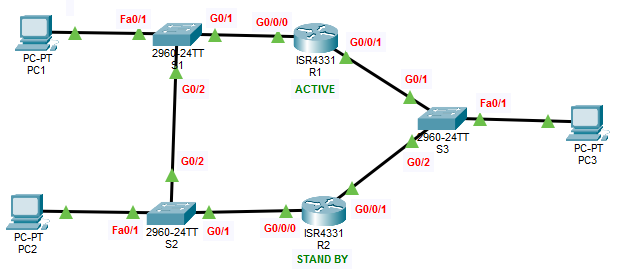

- Configure Basic Settings
- Configure an HSRP active router
- Configure an HSRP standby router
- Verify HSRP operation

| Device | Interface | IP Address | Subnet Mask | Default Gateway |
|---|---|---|---|---|
| R1 | G0/0/0 | 192.168.1.2 | 255.255.255.0 | NOT APPLICABLE |
| G0/0/1 | 10.1.1.2 | 255.255.255.0 | NOT APPLICABLE | |
| R2 | G0/0/0 | 192.168.1.3 | 255.255.255.0 | NOT APPLICABLE |
| G0/0/1 | 10.1.1.3 | 255.255.255.0 | NOT APPLICABLE | |
| S1 | VLAN 1 | 192.168.1.4 | 255.255.255.0 | 192.168.1.1 |
| S2 | VLAN 1 | 192.168.1.5 | 255.255.255.0 | 192.168.1.1 |
| S3 | VLAN 1 | 10.1.1.4 | 255.255.255.0 | 10.1.1.1 |
| PC1 | NIC | 192.168.1.10 | 255.255.255.0 | 192.168.1.1 |
| PC2 | NIC | 192.168.1.11 | 255.255.255.0 | 192.168.1.1 |
| PC3 | NIC | 10.1.1.10 | 255.255.255.0 | 10.1.1.1 |
Router>enable Router#configure terminal Router(config)#hostname R1 R1(config)#interface GigabitEthernet0/0/0 R1(config-if)#ip address 192.168.1.2 255.255.255.0 R1(config-if)#no shutdown R1(config)#interface GigabitEthernet0/0/1 R1(config-if)#ip address 10.1.1.2 255.255.255.0 R1(config-if)#no shutdown R1(config)#interface GigabitEthernet0/0/0 R1(config-if)#standby version 2 R1(config-if)#standby 1 ip 192.168.1.1 R1(config-if)#standby 1 priority 255 R1(config-if)#standby 1 preempt R1(config)#interface GigabitEthernet0/0/1 R1(config-if)#standby version 2 R1(config-if)#standby 2 ip 10.1.1.1 R1(config-if)#standby 2 priority 255 R1(config-if)#standby 2 preempt R1(config-if)#end R1#copy run start
Router>enable Router#configure terminal Router(config-if)#hostname R2 R2(config)#interface GigabitEthernet0/0/0 R2(config-if)#ip address 192.168.1.3 255.255.255.0 R2(config-if)#no shutdown R2(config)#interface GigabitEthernet0/0/1 R2(config-if)#ip address 10.1.1.3 255.255.255.0 R2(config-if)#no shutdown R2(config)#interface GigabitEthernet0/0/0 R2(config-if)#standby version 2 R2(config-if)#standby 1 ip 192.168.1.1 R2(config)#interface GigabitEthernet0/0/1 R2(config-if)#standby version 2 R2(config-if)#standby 2 ip 10.1.1.1 R2(config-if)#end R2#copy run start
Switch>enable Switch#conf t Switch(config)#hostname S1 S1(config)#interface vlan 1 S1(config-if)#ip address 192.168.1.4 255.255.255.0 S1(config-if)#exit S1(config)#ip default-gateway 192.168.1.1 S1(config)#exit S1#copy run start
Switch>enable Switch#conf t Switch(config)#hostname S2 S2(config)#interface vlan 1 S2(config-if)#ip address 192.168.1.5 255.255.255.0 S2(config-if)#no shutdown S2(config-if)#exit S2(config)#ip default-gateway 192.168.1.1 S2(config)#exit S2#copy run start
Switch>enable Switch#conf t Switch(config)#hostname S3 S3(config)#interface vlan 1 S3(config-if)#ip address 10.1.1.4 255.255.255.0 S3(config-if)#no shutdown S3(config-if)#exit S3(config)#ip default-gateway 10.1.1.1 S3(config)#exit S3#copy run start
IP Address: 192.168.1.10 Subnet Mask: 255.255.255.0 Default-Gateway: 192.168.1.1
IP Address: 192.168.1.11 Subnet Mask: 255.255.255.0 Default-Gateway: 192.168.1.1
IP Address: 10.1.1.10 Subnet Mask: 255.255.255.0 Default-Gateway: 10.1.1.1
R1#show standby R1#show standby brief R2#show standby R2#show standby briefNote: To verify HSRP functionality, shut down Router R1 (Active) and confirm that Router R2 transitions to the Active state, ensuring uninterrupted communication between network devices.
Configured and verified HSRP